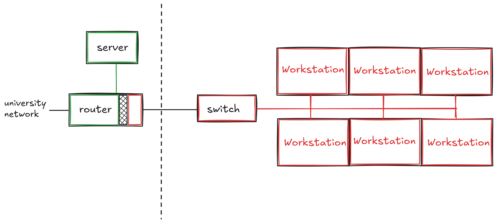

Computing and Testing Lab
BLUF1
I built a computer lab where students have access to editors and compilers, but no general internet access. They can complete programming assessments with the ability to run and test their code before submitting. It’s described here.
The (Obvious) Problem
The advent of large language models has been a disaster for programming education. Most introductory and intermediate programming problems can be trivially solved by LLMs. Effectively overnight, programming assignments went from being challenging exercises that would develop students into capable software engineers to simple copy-paste exercises. While it is relatively easy to “catch” students who do this2 and preserve the integrity of the degree program, these students’ educations are still undermined.
Proctored examinations written on paper are still reasonably able to certify students’ understanding of programming, but experience has shown a common pattern: many students use LLMs to complete homework assignments, and treat studying for paper examinations as a different exercise, consisting of memorization and code tracing, i.e., studying for exam questions rather than learning how to program. Occasionally, we have reason to examine students’ programming ability directly, and it is very clear that paper exams are proxy certifications for programming ability, at best.
Oral interviews or proctored programming assessments on students’ devices are possible, but have issues around scaling. One instructor or TA cannot proctor very many students simultaneously, making giving frequent or comprehensive oral interviews effectively impossible for larger classes. Remote proctoring of examinations using “locked down browsers” or similar is a nonstarter for computer science courses (CS students are rather good at bypassing these controls, really, most students are).
We were left without a robust way to certify that our students had learned what we expected them to have learned.
I decided to build something to solve this problem. This began with a prototype.
I inquired about the availability of unused school-owned laptops, and found that there existed a body of c. 50 laptops that were in the process of being retired. These computers were about 5 years old, x86, Windows 10 devices, in reasonable physical condition.
I built a custom Fedora Linux image for these computers that used dnsmasq3 to “block” internet access via DNS. This used a service running locally to each computer. The computers had editors (VSCode, neovim), Python, and Java installed on them. Submission infrastructure was not subject to internet blocking, so students could complete a programming assessment, and then submit to our autograding server.
These computers were physically stored in two large rolling carts in a classroom, and GWIT workers had to set up the room to use the computers before each assessment, and then strike the setup after each assessment. This made actual use somewhat cumbersome, and limited our ability to use the system frequently. We deployed the prototype for one course, CSCI 2113 Software Engineering. The results were promising, and the mere existence of proctored programming assessments seemed to motivate students to practice programming at home, rather than copying and pasting LLM output.
The total budget for the prototype was $0. This was possible because we used existing resources that would otherwise have been thrown away. I received support for the prototype from GWIT, principally from Brent Delaney and Ramza Khurshid.
Testing Lab
The AY 2025 testing lab was built to support more classes and not require GWIT support for each assessment. The lab is physically located in Tompkins 405.
The lab consists of “air-gapped” workstations, each with compilers, editors, a terminal, and a web browser. These workstations are connected via switches to a router and server in a nearby server closet. The router and server partition the network for the workstations (shown in red below) from the general GW network, restricting access to most websites.

This configuration shows the general partition between the workstations (limited internet) and the server, router, and wider network. There are 48 total workstations, connected via 4 switches to the router and server. Precise details of how internet is blocked are omitted here, because I don’t want students to try to circumvent our network restrictions, I want students to learn how to program.
The lab is a semi-permanent installation, and does not require any support from GWIT to run assessments: instructors can simply bring their classes to the lab room and proctor assessments on the lab computers.
The total budget for the lab was approximately $4000. Most of this cost was for networking hardware and to support a student employee (Ozzy Simpson) who made invaluable contributions to the software stack used by the lab workstations. We also had marvelous support from GWIT, principally Brent Delaney, Paul Riebel, and John Lopez.
The Tompkins 405 physical lab uses, like the prototype, old laptops that were scheduled to be recycled. These laptops (used as workstations) run a customized Fedora Linux operating system. Each is wired to a switch, and the switches are wired to the router using existing network drops.
The router and server use customized software to block general internet access for the workstations, while permitting “allowed” websites, principally documentation and submission/grading servers. We also monitor and log all network traffic in the lab.
There was some difficulty around physically building out the lab: we (GWUIT and I) often could not determine would be the correct person to do a specific task. To bypass these troubles, I undertook many of these tasks, such as physically wiring network cables and configuring operating systems, myself.
In 2025/2026, the lab has been used for CSCI 1111, CSCI 2113, CSCI 2410, and CSCI 6201.